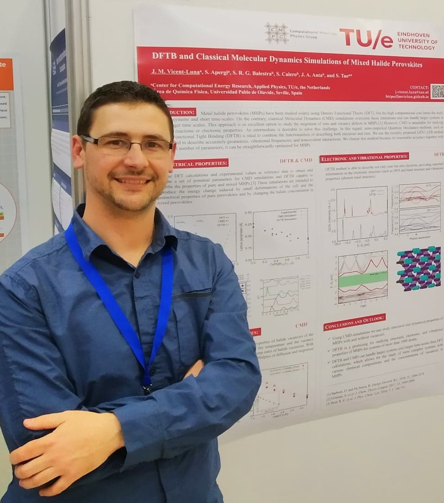

Eindhoven University of Technology
orcid:0000-0001-8712-5591 Google Scholar
Research
My research focuses on molecular simulations of multifunctional materials and soft matter and their interaction with molecules in the gas and liquid phases for energy-related applications. To name a few, I study the behavior of porous solids and surfaces of zeolites, metal-organic frameworks, covalent organic frameworks, activated and mesoporous carbons, carbon nanotubes, ionic liquids, deep eutectic solvents, and ionic solids such as metal halide perovskites for solar cells.
I develop practical simulation workflows to solve scientific challenges by combining various simulation techniques and tools covering various sizes and time scales. I connect large-scale molecular simulation software for Monte Carlo and molecular dynamics using classical, quantum, and semiempirical techniques with my own homemade programs and scripts to provide innovative solutions to specific problems. I also use emergent methods like genetic algorithms and Machine Learning techniques that complement and boost the performance of the molecular simulations.
Publications List: # equal contribution, * corresponding author
Balancing the co-solvent content in high entropy aqueous electrolytes to obtain 2.2 V symmetric supercapacitors. González-Aguilera, L.; Vicent-Luna, J. M.; Tao, S.; Calero, S.; Madero-Castro, R. M.; Raymundo-Piñero, E.; Lu, x.; Gutiérrez, M. C.; Ferrer, M. L.; del Monte, F. XX (XXXX-XXXX), 2024 (manuscript submitted). (64)
Graph Neural Networks for Carbon Dioxide Adsorption Prediction in Aluminium-Exchanged Zeolites. Petković, M.; Vicent-Luna, J. M.; Menkovski, M.; Calero, S. XX (XXXX-XXXX), 2024. (manuscript submitted) Preprint Available at: DOI: 10.48550/arXiv.2403.12659 (63)
Understanding the Role of Open Metal Sites in MOFs for the Efficient Separation of Benzene/Cyclohexane Mixtures. González-Galán, C; Madero-Castro, R. M.; Luna-Triguero, A.; Vicent-Luna, J. M.*; Calero, S.* Sep. Purif. Technol., 348 (127606), 2024. DOI: 10.1016/j.seppur.2024.127606 (62)
The Impact of Metal Centers in the M-MOF-74 Series on Carbon Dioxide and Hydrogen Separation. Wasik, D. O.; Vicent-Luna, J. M.* ; Luna-Triguero, A.; Dubbeldam, D.; Vlugt, T.J.H.; Calero, S.* Sep. Purif. Technol., 339 (126539), 2024. DOI: 10.1016/j.seppur.2024.126539 (61)
Solution Aging Promotes the formation of Hexagonal Polytypes in Mixed Cation/Halides Perovskites. Bravetti, G.; Taurisano, N.; Moliterni, A.; Vicent-Luna, J. M.; Altamura, D.; Aiello, F.; Vanni, N.; Capodilupo, A.L.; Carallo, S.; Gigli, G.; Uccello-Barretta, G.; Balzano, F.; Giannini, C.; Tao, S.; Colella, S.; Rizzo, A. Chem. Matter., 36 (3150-3163), 2024. DOI: 10.1021/acs.chemmater.3c02694 (60)
Adapted Thermodynamical Model for the Prediction of Adsorption in Nanoporous Materials. Stavarache, F.; Luna-Triguero, A.; Calero, S.; Vicent-Luna, J. M.* XX (XXXX-XXXX), 2023. (manuscript submitted) Preprint Available at: DOI: 10.48550/arXiv.2310.15885 (59)
Alcohol-Based Adsorption Heat Pumps using Hydrophobic Metal-Organic Frameworks. Madero-Castro, R. M.; Luna-Triguero, A.; González-Galán, C; Vicent-Luna, J. M.*; Calero, S.* J. Matter. Chem. A., 12 (3434-3448), 2024. DOI: 10.1039/D3TA05258C (58)
Computing solubility and thermodynamics properties of H2O2 in water. Saji, T.H.G.; Vicent-Luna, J. M.; Vlugt, T.J.H.; Calero, S.; Bagheri, B. J. Mol. Liquids, 401 (124530), 2024. DOI: 10.1016/j.molliq.2024.124530 (57)
Adsorption Characteristics of Refrigerants for Thermochemical Energy Storage in Metal-Organic Frameworks. Vicent-Luna, J. M.*; Luna-Triguero, A.* ACS Applied Engineering Mat., 2 (542-552), 2023. DOI: 10.1021/acsaenm.3c00474 (56)
On the use of Water and Methanol with Zeolites for Heat Transfer. Madero-Castro, R. M.; Luna-Triguero, A.; Sławek, A.; Vicent-Luna, J. M.*; Calero, S.* ACS Sustainable Chem. Eng., 11 (4317-4328), 2023. DOI: 10.1021/acssuschemeng.2c05369 (55)
An efficient strategy for electro-reduction reactor exhaust gas fractioning into valuable products with zeolites: a pure in-silico approach. Bessa, M. C. N.; Luna-Triguero, A.; Vicent-Luna, J. M.*; Carmo, P.; Tsampas, M. N.; Ribeiro, A. M. P.; Rodrigues, A. E.; Calero, S.; Ferreira, A. F. P.* Ind. Eng. Chem. Res., 62 (8847-8863), 2023. DOI: 10.1021/acs.iecr.3c00090 (54)
Compound Defects in Halide Perovskites: A First-Principles Study of CsPbI3. Xue, H.; Vicent-Luna, J. M.; Tao, S.; Brocks, G. J. Phys. Chem. C., 127 (1189-1197), 2023. DOI: 10.1021/acs.jpcc.2c06789 (53)
Refined GFN1-xTB Parameters for Engineering Phase-Stable CsPbX3 Perovskites. Raaijmakers, S.; Pols, M.; Vicent-Luna, J. M.*; Tao, S.* J. Phys. Chem. C., 126 (9587-9596), 2022. DOI: 10.1021/acs.jpcc.2c02412 (52)
Phase Transformation Barrier Modulation of CsPbI3 Films via PbI3− Complex for Efficient All-inorganic Perovskite Photovoltaics. Qiu, Z.; Wang, F.; Wang, C.; Zhu, C.; Wang, H.; Chen, Q.; Chen, Y.; Zhang, Y.; Guo, Z.; Li, N.; Zai, H.; Vicent-Luna, J. M.; Tao, S.; Zhou. H. Nano Energy, 99 (107388), 2022. DOI: 10.1016/j.nanoen.2022.107388 (51)
Transferable Classical Force Field for Pure and Mixed Metal Halide Perovskites Parameterized from First-Principles. Seijas-Bellido, J. A.; Samanta, B.; Valadez-Villalobos, K.; Gallardo, J. J.; Navas, J.; Balestra, S. R. G.; Madero Castro, R. M.; Vicent-Luna, J. M.; Tao, S.; Caspary Toroker, M.; Anta, J. A. J. Chem. Inf. Model., 62 (6423-6435), 2022. DOI: 10.1021/acs.jcim.1c01506 (50)
Adsorption of Linear Alcohols in Amorphous Activated Carbons: Implications for Energy Storage Applications. Madero-Castro, R. M.; Vicent-Luna, J. M.*; Peng, X.; Calero, S.* ACS Sustainable Chem. Eng., 10 (6509-6520), 2022. DOI: 10.1021/acssuschemeng.1c06315 (49)
Transitioning from ionic liquids to deep eutectic solvents. Zhang, H.#; Vicent-Luna, J. M.#; Tao, S.; Calero, S.; Jiménez-Rioboó, R. J.; Ferrer, M. L.; del Monte, F.; Gutiérrez, M. C. ACS Sustainable Chem. Eng., 10 (1232-1245), 2022. DOI: 10.1021/acssuschemeng.1c06999 (48)
The role of solvents in the formation of methylammonium lead triiodide perovskite. Jiang, J.; Vicent-Luna, J. M.; Tao, S. J. Energy Chem., 68 (393-400), 2022. DOI: 10.1016/j.jechem.2021.12.030 (47)
Effect of Co-Solvents on the Crystallization and Phase Distribution of Mixed-Dimensional Perovskites. Caiazzo, A.; Datta, K.; Jiang, J.; Gélvez-Rueda, M. C.; Li, J.; Ollearo, R. Vicent-Luna, J. M.; ; Tao, S.; Grozema, F. C.; Wienk, M. M.; Janssen, R. A. J. Adv. Energy Mater., 11 (2102144), 2021. DOI: 10.1002/aenm.202102144 (46)
Efficient Computation of Structural and Electronic Properties of Halide Perovskites Using Density Functional Tight Binding: GFN1-xTB Method. Vicent-Luna, J. M.; Apergi, S. ; Tao, S. J. Chem. Inf. Model., 61 (4415-4424), 2021. DOI: 10.1021/acs.jcim.1c00432 (45)
Atomistic Insights Into the Degradation of Inorganic Halide Perovskite CsPbI3: A Reactive Force Field Molecular Dynamics Study. Pols, M.; Vicent-Luna, J. M.; Filot, I.; van Duin, A. C. T. ; Tao, S. J. Phys. Chem. lett., 12 (5519-5525), 2021. DOI: 10.1021/acs.jpclett.1c01192 (44)
EMIMBF4 in ternary liquid mixtures of water, dimethyl sulfoxide and acetonitrile as "tri-solvent-in-salt" electrolytes for high-performance supercapacitors operating at –70 °C. Lu, X.; Vicent-Luna, J. M.; Calero, S.; Madero-Castro, R. M.; Gutiérrez, M. C.; Ferrer, M. L.; del Monte, F. Energy Storage Mater., 40 (368-385), 2021. DOI: 10.1016/j.ensm.2021.05.026 (43)
Water-Gas Shift Reaction to Capture Carbon Dioxide and Separate Hydrogen on Single-Walled Carbon Nanotubes. Peng, X.; Vicent-Luna, J. M.; Q. Jin. ACS Appl. Mater. Interfaces, 13 (11026-11038), 2021. DOI: 10.1021/acsami.1c00145 (42)
Aqueous cosolvent in Zwitterionic‐based PILs as Electrolytes in 2.0 V Supercapacitors. Lu, X.; Vicent-Luna, J. M.; Jiménez, R.; Calero, S.; Roldán-Ruiz, M. J.; Gutiérrez, M. C.; Ferrer, M. L.; del Monte, F. ChemSusChem, 13 (5983-5995), 2020. DOI: 10.1002/cssc.202002028 (41)
Further Extending the Dilution Range of the "solvent-in-DES" Regime upon the Replacement of Water by an Organic Solvent with Hydrogen Bond Capabilities. López-Salas, N.; Vicent-Luna, J. M.; Posada, E.; Imberti, S.; Madero-Castro, R. M.; Calero, S.; Ania, C. O. ; Jiménez-Rioboó, R. J.; Gutiérrez, M. C.; Ferrer, M. L.; del Monte, F. ACS Sustainable Chem. Eng., 8 (12120-12131), 2020. DOI: 10.1021/acssuschemeng.0c03516 (40)
Exploiting the π-bonding for the Separation of Benzene and Cyclohexane in Zeolites. González-Galán, C.; Luna-Triguero, A.; Vicent-Luna, J. M.*; Zaderenko, A. P.; Sławek, A.; Sánchez-de-Armas, R.; Calero, S.* Chem. Eng. J., 398 (125678), 2020. DOI: 10.1016/j.cej.2020.125678 (39)
Efficient Modelling of Ion Structure and Dynamics in Inorganic Metal Halide Perovskites. Balestra, S. R. G.#; Vicent-Luna, J. M.#; Calero, S.; Tao, S.; Anta, J. A. J. Matter. Chem. A., 8 (11824-11836), 2020. DOI: 10.1039/D0TA03200J (38)
Separation of CF4/N2, C2F6/N2, and SF6/N2 Mixtures in Amorphous Activated Carbons using Molecular Simulations. Peng, X.#; Vicent-Luna, J. M.#; Q. Jin. ACS Appl. Mater. Interfaces, 12 (20044-20055), 2020. DOI: 10.1021/acsami.0c01043 (37)
Enhancing Separation Efficiency in European Syngas Industry by Using Zeolites. Luna-Triguero, A.; Vicent-Luna, J. M.; Jansman, T. M.; Zafeiropoulos, G.; Tsampas, M. N.; van de Sanden, M. C. M.; Akse, H. N.; Calero, S. Catal. Today, 362 (113-121), 2020. DOI: 10.1016/j.cattod.2020.03.061 (36)
Role of Hydrogen Bonding in the Capture and Storage of Ammonia in Zeolites. Matito-Martos, I.; Martín-Calvo, A.; Parra, J. B.; Ania, C.; Vicent-Luna, J. M.*; Calero, S.* Chem. Eng. J., 387 (124062), 2020. DOI: 10.1016/j.cej.2020.124062 (35)
Adsorption of Alkanes in Zeolites LTA and FAU: Quasi-Equilibrated Thermodesorption Supported by Molecular Simulations. Sławek, A.; Vicent-Luna, J. M.; Grzybowska, K.; Valencia, S.; Rey, F.; Makowski, W.; Calero, S. J. Phys. Chem. C, 123 (29665-29678), 2019. DOI: 10.1021/acs.jpcc.9b07907 (34)
Computational Study of the Effect of Functional Groups on Water Adsorption in Mesoporous Carbons: Implications for Gas Adsorption. Peng, X.#; Vicent-Luna, J. M.#; Jain, S. K.; Jin, Q.; Singh, J. K. ACS Appl. Nano. Mater., 2 (7103-7113), 2019. DOI: 10.1021/acsanm.9b01633 (33)
Looking at the "Water-in-Deep-Eutectic-Solvent" System: A dilution Range for High Performance Eutectics. López-Salas, N.#; Vicent-Luna, J. M.#; Imberti, S.; Posada, E.; Roldán, M. J.; Anta, J. A.; Balestra, S. R. G.; Madero-Castro, R. M.; Calero, S.; Jiménez-Rioboó, R. J.; Gutiérrez, M. C.; Ferrer, M. L.; del Monte, F. ACS Sustainable Chem. Eng., 7 (17565-17573), 2019. DOI: 10.1021/acssuschemeng.9b05096 (32)
Adsorption of Light Alcohols in a High Hydrophobic Metal Azolate Framework. Madero-Castro, R. M.; Vicent-Luna, J. M.*; Calero, S.* J. Phys. Chem. C, 123 (23987-23994), 2019. DOI: 10.1021/acs.jpcc.9b05508 (31)
π-Complexation for Olefin/Paraffin Separation using Aluminosilicates. Luna-Triguero, A.; Slawek, A.; Sánchez-de-Armas, R.; Gutiérrez-Sevillano, J. J.; Ania, C. O.; Parra, J. B.; Vicent-Luna, J. M.*; Calero, S.* Chem. Eng. J, 380 (122482), 2019. DOI: 10.1016/j.cej.2019.122482 (30)
Acetylene Storage and Separation using Metal-Organic Frameworks with Open Metal Sites. Luna-Triguero, A.; Vicent-Luna, J. M.; Madero-Castro, R. M.; Gómez-Álvarez, P.; Calero, S. ACS Appl. Mater. Interfaces, 11 (31499-31507), 2019. DOI: 10.1021/acsami.9b09010 (29)
Enhancing the Water Capacity in Zr-based Metal-Organic Framework for Heat Pump and Atmospheric Water Generator Applications. Luna-Triguero, A.; Slawek, A.; Huinink, H.; Vlugt, T. J. H. ; Poursaeidesfahani, A.; Vicent-Luna, J. M.*; Calero, S.* ACS Appl. Nano. Mater., 2 (3050-3059), 2019. DOI: 10.1021/acsanm.9b00416 (28)
Adsorption and diffusion of benzene in Mg-MOF-74 with open metal sites. Liu, A.; Peng, X.; Jin, Q.; Jain, S. K.; Vicent-Luna, J. M.; Calero, S.; Zhao, D. ACS Appl. Mater. Interfaces, 11 (4686-4700), 2019. DOI: 10.1021/acsami.8b20447 (27)
Potential of Polarizable Force Fields for Predicting the Separation Performance of Small Hydrocarbons in M- MOF-74. Becker, T.; Luna-Triguero, A.; Vicent-Luna, J. M.; Lin, Li-Chiang.; Dubbeldam, D.; Calero, S.; Vlugt, T. Phys. Chem. Chem Phys., 20 (28848-28859), 2018. DOI: 10.1039/C8CP05750H (26)
Adsorption of Cyclohexane in Zeolites: High-throughput Computational Screening Validated by Experimental Data. Sławek, A.; Grzybowska, K.; Vicent-Luna, J. M.; Makowski, W.; Calero, S. ChemPhysChem, 19 (3364-3371), 2018. DOI: 10.1002/cphc.201800968 (25)
Role of Ionic Liquid [EMIM]+[SCN]- in the Adsorption and Diffusion of Gases in Metal-Organic Frameworks. Vicent-Luna, J. M.; Gutiérrez-Sevillano, J. J.; Hamad, S.; Anta, J. A.; Calero, S. ACS Appl. Mater. Interfaces, 10 (29694-29704), 2018. DOI: 10.1021/acsami.8b11842 (24)
Gate-Opening Mechanism of Hydrophilic-Hydrophobic Metal-Organic Frameworks: Molecular Simulations and Quasi-Equilibrated Desorption. Sławek, A.; Vicent-Luna, J. M.; Marszałek, B.; Gil, B.; Morris, R. E.; Makowski, W.; Calero, S. Chem. Mater., 30 (5116-5127), 2018. DOI: 10.1021/acs.chemmater.8b01603 (23)
Improving Olefin Purification using Metal Organic Frameworks with Open Metal Sites. Luna-Triguero, A.; Vicent-Luna, J. M.; Poursaeidesfahani, A.; Vlugt, T. J. H.; Sánchez-de-Armas, R.; Gómez-Álvarez, P.; Calero, S. ACS Appl. Mater. Interfaces, 10 (16911-16917), 2018. DOI: 10.1021/acsami.8b04106 (22)
Phase Transition Induced by Gas Adsorption in Metal‐Organic Frameworks. Luna-Triguero, A.; Vicent-Luna, J. M.*; Calero, S.* Chem. - Eur. J., 24 (8530-8534), 2018. DOI: 10.1002/chem.201801157 (21)
Molecular Dynamics Analysis of Charge Transport in Ionic-Liquid Electrolytes Containing Added Salt with Mono, Di, and Trivalent Metal Cations. Vicent-Luna, J. M.; Azaceta, E.; Hamad, S.; Ortiz-Roldan, J. M.; Tena-Zaera, R.; Calero, S.; Anta, J. A. ChemPhysChem, 19 (1665-1673), 2018. DOI: 10.1002/cphc.201701326 (20)
Stepped Propane Adsorption in Pure-Silica ITW Zeolite. Min, J. G.; Luna-Triguero, A.; Byun, Y.; Balestra, S. R. G.; Vicent-Luna, J. M.; Calero, S.; Hong, S. B.; Camblor, M. A. Langmuir, 34 (4774-4779), 2018. DOI: 10.1021/acs.langmuir.8b00628 (19)
Ordering of n-Alkanes Adsorbed in the Micropores of AlPO4-5: a Combined Molecular Simulations and Quasi-Equilibrated Thermodesorption Study. Sławek, A.; Vicent-Luna, J. M.; Marszałek, B.; Makowski, W.; Calero, S. J. Phys. Chem. C, 121 (25292-25302), 2017. DOI: 10.1021/acs.jpcc.7b08927 (18)
Micelle Formation in Aqueous Solutions of Room Temperature Ionic Liquids: A Molecular Dynamics Study. Vicent-Luna, J. M.; Romero-Enrique, J. M.; Calero, S.; Anta, J. A. J. Phys. Chem. B, 121 (8348-8358), 2017. DOI: 10.1021/acs.jpcb.7b05552 (17)
Quasi-Equilibrated Thermodesorption Combined with Molecular simulation for Adsorption and Separation of Hexane Isomers in Zeolites MFI and MEL. Sławek, A.; Vicent-Luna, J. M.; Marszałek, B.; Makowski, W.; Calero, S. J. Phys. Chem. C, 121 (19226-19238), 2017. DOI: 10.1021/acs.jpcc.7b05347 (16)
Electrochemical reduction of oxygen in aprotic ionic liquids containing metal cations: Na-O2 system case study. Azaceta, E.; Lutz, L.; Grimaud, A.; Vicent-Luna, J. M.; Hamad, S.; Yate, L.; Cabañero, G.; Grande, H. G.; Anta, J. A.; Tarascon, J. M.; Tena-Zaera, R. ChemSusChem, 10 (1616-1623), 2017. DOI: 10.1002/cssc.201601464 (15)
Effective Model for Olefin/Paraffin Separation using (Co, Fe, Mn, Ni)-MOF-74. Luna-Triguero, A.; Vicent-Luna, J. M.; Becker, T.;Vlugt, T.; Dubbeldam, D.;Gomez-Alvarez, P.; Calero, S. ChemistrySelect, 2 (665-672), 2017. DOI: 10.1002/slct.201601095 (14)
Olefin/Paraffin Separation in Open Metal Site Cu-BTC Metal-Organic Framework. Luna-Triguero, A.; Vicent-Luna, J. M.; Gomez-Alvarez, P.; Calero, S. J. Phys. Chem. C, 121 (3126-3132), 2017. DOI: 10.1021/acs.jpcc.6b11808 (13)
Adsorption of N-Alkanes in MFI and MEL: Quasi-Equilibrated Thermodesorption Combined with Molecular Simulations. Sławek, A.; Vicent-Luna, J. M.; Marszałek, B.; Balestra, S. R. G.; Makowski, W.; Calero, S. J. Phys. Chem. C, 120 (25338-25350), 2016. DOI: 10.1021/acs.jpcc.6b06957 (12)
Storage and Separation of Carbon Dioxide and Methane in Hydrated Covalent Organic Frameworks. Vicent-Luna, J. M.; Luna-Triguero, A.; Calero, S. J. Phys. Chem. C, 120 (23756-23762), 2016. DOI: 10.1021/acs.jpcc.6b05233 (11)
Quantum and Classical Molecular Dynamics of Ionic Liquid Electrolytes for Na/Li-Based Batteries: Molecular Origins of the Conductivity Behavior. Vicent-Luna, J. M.; Ortiz-Roldan, J. M.; Hamad, S.; Tena-Zaera, R.; Calero, S.; Anta, J. A. ChemPhysChem, 17 (2473-2481), 2016. DOI: 10.1002/cphc.201600285 (10)
Liquid Self-Diffusion of H2O and DMF Molecules in Co-MOF-74: Molecular Dynamics Simulations and Dielectric Spectroscopy Studies. Bermudez-Garcia, J. M.; Vicent-Luna, J. M.; Yanez-Vilar, S.; Hamad, S.; Sanchez-Andujar, M.; Castro-Garcia, S.; Calero, S.; Senaris-Rodriguez, M. A. Phys. Chem. Chem. Phys, 18 (19605-19612), 2016. DOI: 10.1039/c6cp02477g (9)
Solubilities of CO2, CH4, C2H6, and SO2 in Ionic Liquids and Selexol from Monte Carlo Simulations. Ramdin, M.; Chen, Q.; Balaji, S. P.; Vicent-Luna, J. M.; Torres-Knoop, A.; Dubbeldam, D.; Calero, S.; de Loos, T. W.; Vlugt, T. J. H. J. Comput. Sci., 15 (74-80), 2016. DOI: 10.1016/j.jocs.2015.09.002 (8)
Computing Bubble-Points of CO2/CH4 Gas Mixtures in Ionic Liquids from Monte Carlo Simulations. Ramdin, M.; Balaji, S. P.; Vicent-Luna, J. M.; Torres-Knoop, A.; Chen, Q.; Dubbeldam, D.; Calero, S.; de Loos, T. W.; Vlugt, T. J. H. Fluid Phase Equilib., 418 (100-107), 2016. DOI: 10.1016/j.fluid.2015.09.041 (7)
Aqueous Solutions of Ionic Liquids: Microscopic Assembly. Vicent-Luna, J. M.; Dubbeldam, D.; Gomez-Alvarez, P.; Calero, S. ChemPhysChem, 17 (380-386), 2016. DOI: 10.1002/cphc.201501022 (6)
Understanding and Exploiting Window Effects for Adsorption and Separations of Hydrocarbons. Luna-Triguero, A.; Vicent-Luna, J. M.; Dubbeldam, D.; Gomez-Alvarez, P.; Calero, S. J. Phys. Chem. C, 119 (19236-19243), 2015. DOI: 10.1021/acs.jpcc.5b05597 (5)
Ion Transport in Electrolytes for Dye-Sensitized Solar Cells: A Combined Experimental and Theoretical Study. Vicent-Luna, J. M.; Idígoras, J.; Hamad, S.; Calero, S.; Anta, J. A. J. Phys. Chem. C, 118 (18448-18455), 2014. DOI: 10.1021/jp509193h (4)
Solubility of the Precombustion Gases CO2, CH4, CO, H2, N2, and H2S in the Ionic Liquid [BMIM][Tf2N] from Monte Carlo Simulations. Ramdin, M.; Balaji, S. P.; Vicent-Luna, J. M.; Gutiérrez-Sevillano, J. J.; Calero, S.; de Loos, T. W.; Vlugt, T. J. H. J. Phys. Chem. C, 118 (23599-23604), 2014. DOI: 10.1021/jp5080434 (3)
Effect of Room-Temperature Ionic Liquids on CO2 Separation by a Cu-BTC Metal-Organic Framework. Vicent-Luna, J. M.; Gutiérrez-Sevillano, J. J.; Anta, J. A.; Calero, S. J. Phys. Chem. C, 117 (20762-20768), 2013. DOI: 10.1021/jp407176j (2)
Molecular Mechanisms for Adsorption in Cu-BTC Metal Organic Framework. Gutiérrez-Sevillano, J. J.; Vicent-Luna, J. M.; Dubbeldam, D.; Calero, S. J. Phys. Chem. C, 117 (11357-11366), 2013. DOI: 10.1021/jp401017u (1)
Conference Proceedings: Use of an Extended Density Functional Tight Binding Method for a Fast Computation of Metal Halide Perovskites Properties. Vicent-Luna, J. M.; Apergi, S.; Tao, S. Proceedings of nanoge Online Meetup Conference: Contemporary Stability Challenges in Hybrid Perovskite Photovoltaics, SCHP 2020. SCHP
Conference Proceedings: Molecular Dynamics Investigation of the Ion Migration of Inorganic Metal Halide Perovskites. Vicent-Luna, J. M.; Balestra, S. R. G.; Calero, S.; Anta, J. A.; Tao, S. Proceedings of nanoGe Online Meetup Conference: Origins of Electronic Defects in Halide Perovskites, EDHP 2020. EDHP
Conference Proceedings: DFTB and Classical Molecular Dynamics Simulations of Mixed Halide Perovskite Solar Cells. Vicent-Luna, J. M.; Apergi, S.; Balestra, S. R. G.; Calero, S.; Anta, J. A.; Tao, S. Proceedings of nanoGe International Conference on Perovskite Solar Cells, Photonics and Optoelectronics, NIPHO20 2020. NIPHO20
Cristales Porosos Impregnados con Líquidos Iónicos para Captura y Separación de Dióxido de Carbono. Vicent-Luna, J. M.; Calero, S. An. Quím., 115 (200-208), 2019. Link to Publication
Conference Proceedings: Molecular Dynamics Analysis of Charge Transport in Ionic-Liquid Electrolytes Containing Added Salt with Mono, Di, and Trivalent Metal Cations. Vicent-Luna, J. M.; Azaceta, E.; Hamad, S.; Ortiz-Roldan, J. M.; Tena-Zaera, R.; Calero, S.; Anta, J. A. Proceedings of nanoGe Fall Meeting 2018. DOI: 10.29363/nanoge.nfm.2018.202
Molecular Simulation of Ionic Liquids-Based Systems For Energy Applications. Vicent-Luna, J. M. PhD. Thesis , ISBN: 978-84-697-7513-4, 2018. Download here
Inside Cover: Quantum and Classical Molecular Dynamics of Ionic Liquid Electrolytes for Na/Li-Based Batteries: Molecular Origins of the Conductivity Behavior. Vicent-Luna, J. M.; Ortiz-Roldan, J. M.; Hamad, S.; Tena-Zaera, R.; Calero, S.; Anta, J. A. ChemPhysChem, 17 (2449-2449), 2016. DOI: 10.1002/cphc.201600808
Inside Cover: Aqueous Solutions of Ionic Liquids: Microscopic Assembly. Vicent-Luna, J. M.; Dubbeldam, D.; Gomez-Alvarez, P.; Calero, S. ChemPhysChem, 17 (329-329), 2016. DOI: 10.1002/cphc.201600059
Effect of Na/Li concentration in ionic liquid electrolytes for ion batteries. Vicent-Luna, J. M. Layman's Summary for the Atlas Of Science, 2016. LINK: Atlas Of Science
Estudio de las Propiedades Dinámicas y Estructurales del Argon Líquido. Vicent-Luna, J. M. MoleQla, ISSN 2173-0903, 11 (9.1) 2013. LINK: MoleQla n 11
Líquidos Iónicos: Propiedades y Aplicaciones. Vicent-Luna, J. M. MoleQla, ISSN 2173-0903, 10 (3.1) 2013. LINK: MoleQla n 10
Comment on: Unconventional, Highly Selective CO2 Adsorption in Zeolite SSZ-13 Vicent-Luna, J. M. Revista Materiales en Adsorción y Catálisis, ISSN 2173-0253, 3, 2012. LINK: Adsorción n 3